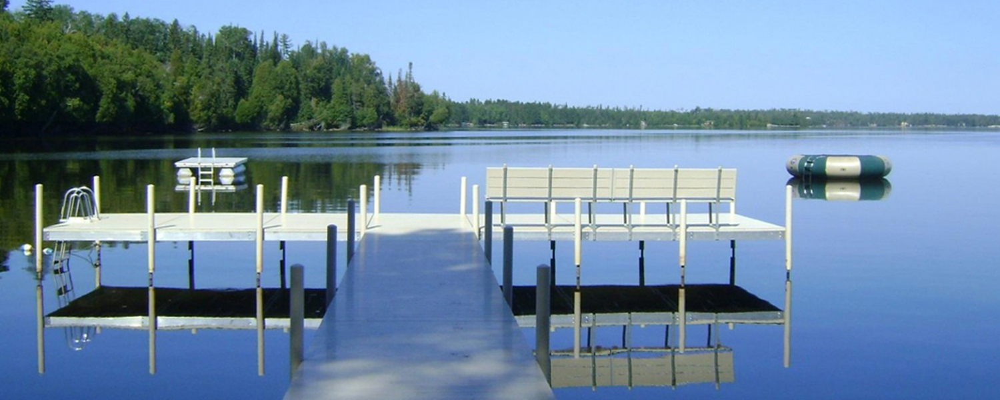
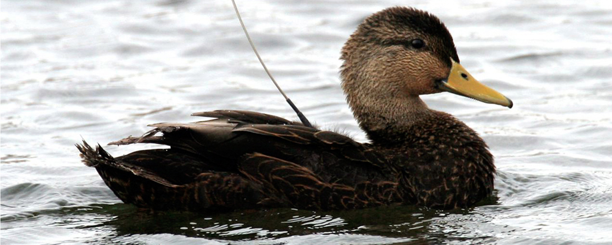
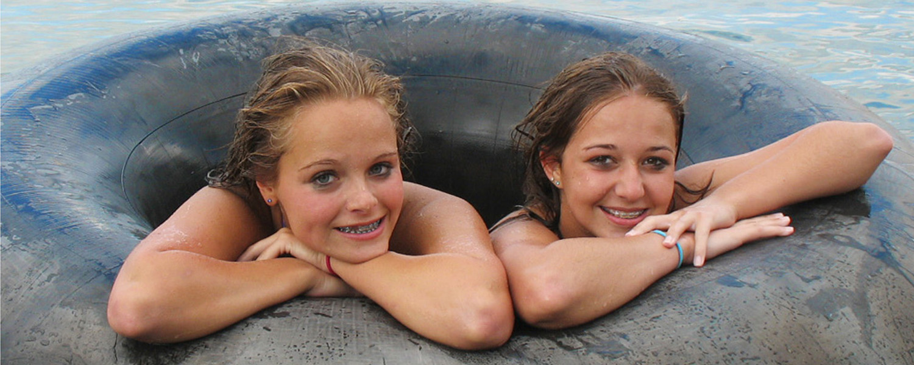
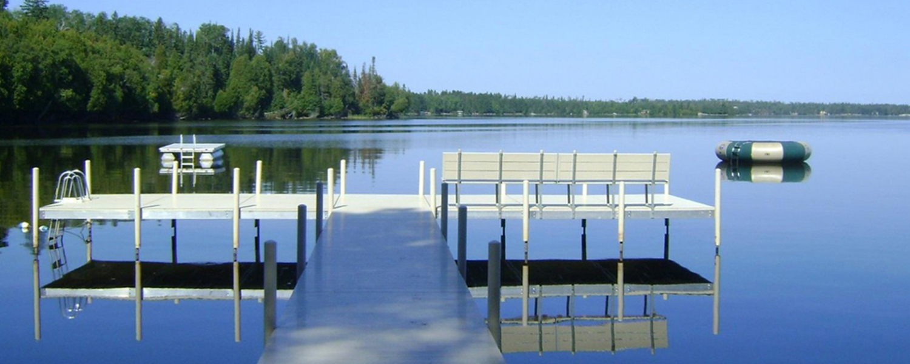
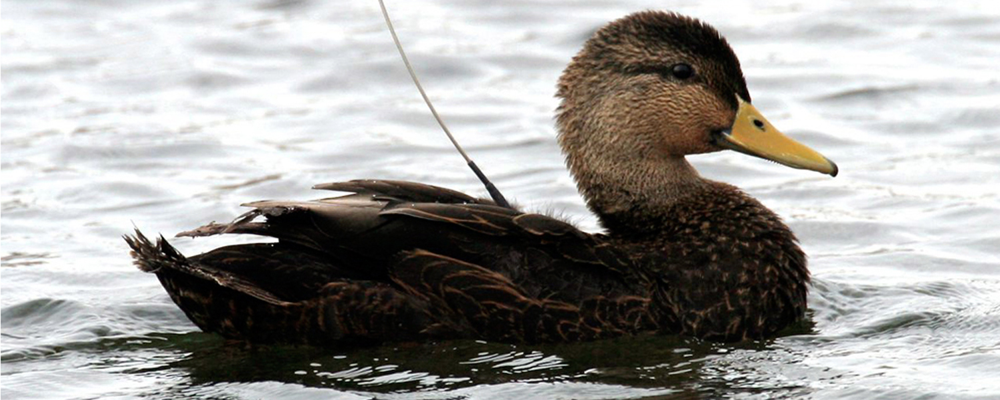
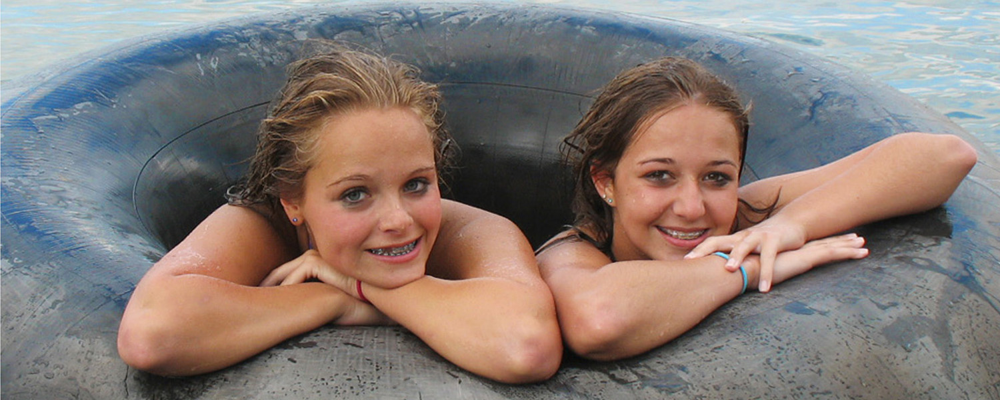
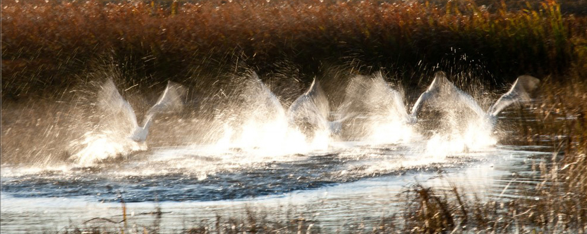
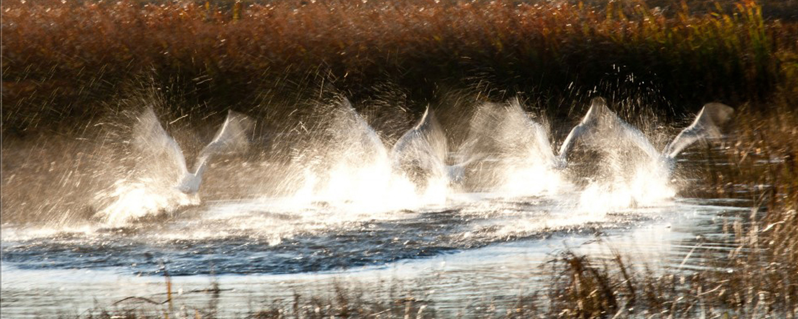

Cabin A

 





 

Welcome to
Congratulations, you have discovered a Northern Minnesota family resort paradise established in the 1930's! White Birch Resort is the perfect place for your next family resort vacation! This great resort sits on the northeast corner of beautiful Blackduck Lake which consists of 2,596 acres. With it's natural beauty of overwhelming sunsets, calm summer lake breezes and spectacular views you are sure to receive the best resort lake view on Blackduck Lake. Even though Blackduck Lake is known as a Premier Northern Minnesota walleye fishing lake and has been rated on the top "BEST" Minnesota walleye opener lakes in the state, you can also catch northern pike, perch, bass, sunfish, crappie, and drum fish at this Blackduck MN resort.
White Birch Resort has ten beautiful BRAND NEW lodging units. There are three entertainment 3100 sq ft Reunion Homes which sleep up to 22 people each. The newest four bedroom entertainment reunion homes also have a private outdoor hot tub in the screen porches. Our cabins and homes range in size from extra large one room studio cabins to six bedroom entertainment reunion homes. The cabins and homes also range from BRAND NEW traditional Minnesota studio cabins to BRAND NEW luxury homes. They are all uniquely furnished, designed and accessorized to have that comfortable cozy "Charm of the past with luxury of today", located in the heart of lake country and nature. "White Birch Resort accomodations are truly unique for the Northwest Central region of Minnesota".
All of White Birch Resorts cabins and homes have breathtaking Blackduck Lake views, because they sit on a hill 25' above Blackduck lake. The lake front consists of 500'x100' well groomed lawns to the lakes edge. The west side of the resort borders the knee high, Blackduck River which flows north to Red Lake. The total resort sits on 7 acres, so you'll find we have a lot of ample amount of space. WBR is a year round resort for families enjoying fishing, hunting, down hill skiing, ice fishing, hiking, snowmobiling and all around outdoor activities.
We are located just three miles west of Blackduck MN. The little town of Blackduck is approximately 800 people located only 25 miles northeast of Bemidji, MN and 25 miles south of Upper Red Lake. This friendly little town is a Northwoods hub for great outdoor recreation. It also has a variety of businesses and activities to welcome and serve you. We're sure you'll like our Northwoods hospitality for your next Minnesota family vacation!
Take some time to explore our website and let us know which brand new home or cabin you would like us to reserve for your next MN family vacation. Or just feel free to call us and we will be happy to discuss what our resort and Minnesota attractions in the area have to offer. Thank you for viewing White Birch Resort and we hope we can start a Minnesota family vacation for you. Minnesota Family Resort Private Hot TubMinnesota water parks.